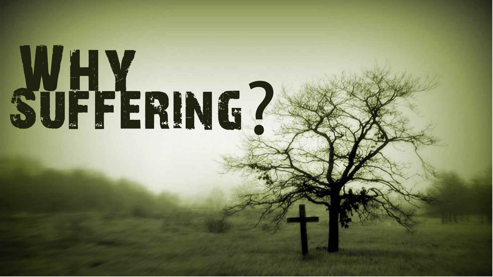
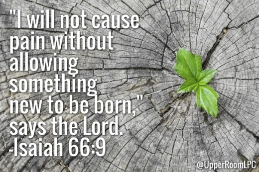

WHY DO THINGS GO WRONG?
As we might expect of a practical book by a practical man, James plunges at once into a practical problem. He introduces it as early as verse 2, saying, 'Consider it pure joy, my brothers, whenever you face trials of many kinds, because you know that the testing of your faith develops perseverance.' The problem James introduces is the problem we face when things do not go as we would like them to go or as we have planned them. It is the problem we have when we find ourselves asking, "Why did this go wrong? Why did God let this happen? Why did this happen to me?"

Of all the questions I am asked, that is probably the one I have heard most often. Misfortunes come into our lives, unexplained tragedies occur, and we ask, "Why? Why did this happen?" James gives some practical examples. The first concerns a person who lacks worldly goods (v.9), compared with a person who is rich (v. 10). James says, "Don't take pride in either situation." Reversals of fortune can happen overnight. Here is a person who through industry, commerce or the mere outworking of circumstances, has become relatively well off, and then suddenly he loses all he had. He is bound to ask, "Why did this happen?" And "Why did this happen to me rather than to someone else?"
Sometimes it is not a matter of wealth; it is a matter of position or prestige. We can go through a period of our lives where we are highly regarded. We are riding on a pinnacle of high public opinion. Then the winds of fortune change, and we are right back where we started. A person in these circumstances might well ask, "Why?"
Pastors sometimes face these problems. I have a good friend who is in the Christian ministry and for nearly twenty years was used by God to start and then build up a solid evangelical church. It grew to more than one thousand members, had a strong missionary program and exercised a valuable outreach to its affluent suburban community. But there were people in the church who were unhappy with the pastor. They didn't like his 'leadership style', as they put it. Suddenly he was asked to leave. It was a great and unexpected blow both to himself and his family. Why do such things happen? There was no immediate explanation.
Sometimes it is the loss of friends or family through death. Perhaps it is the death of a husband, a wife, a son or a daughter, or someone else important to our well-being, someone on whom we depended, someone to whom we looked for direction and understanding. Sometimes it is a person who seems essential to a certain work or ministry. When he or she is gone the ministry declines. When such a person is taken away, we find ourselves asking, "Why? Why did this happen?"
There are two ways in which we can ask those questions. We can ask them with our fists clenched, shaking them at heaven in rebellion against God, saying to him, "Why did you let this happen to me?" In that form the question is really an accusation. It means, "If you are who you say you are, if you are a loving God, if you are true to your promises, none of these things should have happened."
Or we can ask, as saints have asked down through the history of the Christian church when they found themselves in dreadful circumstances, "Dear God, why is this happening? I am puzzled by it. Please explain it to me." If you ask the question that way, if you are saying to God, "I don't understand what is happening, because I live in a world where my horizons are limited and where, because of my sin, I certainly do not see things as you see them; I come to you for the insight you alone can provide," then God, who is faithful to his people, may indeed provide some answers.
Some of these answers are given in the first chapter of James.
SOME REASONS WHY
There are four ways we can look at suffering.
1. Some suffering is simply common to humanity. Poetically, Job said, 'Man is born to trouble as surely as sparks fly upward' (Job 5:7). The word 'sparks' in our English Bibles actually translates two Hebrew words which mean 'sons of flame'. It is as though there is a great bonfire, and each generation is thrown upon the ashes of the generation that went before it. In time it too burns up and is gone.
Job is not saying that this is directly related to specific sin or shortcomings. It was not in his case. Job's sufferings were not related to any sinful thing he had done or even thought of doing. Job was saying that it is simply the common lot of men and women that we are born in pain, cause pain, endure pain and eventually die, often in pain. This does not mean that God does not bring about his own purposes even in the suffering, but it does mean that we must not make the mistake the disciples made in Christ's day when they saw the man who had been born blind and immediately wanted to link his suffering to some specific sin either in him or his parents (cf. John 9:2). They were thinking, 'Sin produces suffering. There is a one-to-one relationship; therefore, it is either this man or his parents who are guilty.' But it is simply not true that when anyone is passing through a particularly difficult time this can always be linked to something sinful he or she has done. Therefore, Jesus answered, 'Neither this man nor his parents sinned, ... but this happened so that the work of God might be displayed in his life' (v. 3). In other words, in this man's case, suffering was an honor rather than a judgment.
2. There is some suffering which we bring upon ourselves. When James wrote about the rich man who lost his wealth, he was not implying that the rich man had been dishonest or had fleeced the poor to get his riches, or anything like that. However, it is possible to conceive of the case of a person who has lost his riches by over-extending himself through greed. It would be a case where he said, "I am not satisfied with what I have. I want to have more. I want to invest in risky ventures, because I'm never really going to get to the top of the financial heap unless I do. I am going to take financial risks." Then, as he takes chances, he loses everything he has. In such a case the loss of the riches would have been something that he had brought upon himself.
A person who dies of lung cancer after twenty or more years of smoking cigarettes cannot blame God for his cancer. He has brought it on himself. It is the same with problems caused by overeating, excessive drinking, taking harmful drugs, promiscuous sex, lying, giving vent to an unbridled temper, and many other such things. The suffering that comes from them is no one's fault but our own. James may be thinking along these lines in verse 13, saying that certain things in us may bring misfortune. The example he gives is temptation to be greedy. 'When tempted, no one should say, "God is tempting me."' For God cannot be tempted by evil, nor does he tempt anyone; but each one is tempted when, by his own evil desire, he is dragged away and enticed. Then, after desire has conceived, it gives birth to sin; and sin, when it is full-grown, gives birth to death' (vv. 13-15). He is saying that sometimes the things we go through are the product of our own sinful choices.
3. Some suffering is intended by God for our good, to develop our character and make us like Jesus Christ. God brings certain problems into our lives in order to perfect us, mould us or shape us into the kind of men and women he would have us be. 'Consider it pure joy, my brothers, whenever you face trials of many kinds, because you know that the testing of your faith develops perseverance. Perseverance must finish its work so that you may be mature and complete, not lacking anything' (vv. 2-4).
If you want to develop a strong physical body, you have to do it by strenuous exercise. Sitting around and simply enjoying yourself, eating candy and roasted marshmallows, will never produce an athlete. If you want to be strong and have a well-developed body, you must get out on the track. You have to begin with jogging. You have to do your exercises. You have to endure hardship in order to tone up your muscles.
So also with character. The person who has never gone through any struggle, who has never had any misfortune in his or her life, who has never suffered any kind of loss, will not develop the kind of character that can endure calamity. And certainly such a person will not have the kind of character that will be able to instruct and help other people. James says that some misfortune is sent, not because of sin or even because it is the common lot of humanity, but simply because God wants it to develop traits of strong Christian character that would not be developed in any other way.
Perseverance with patience is one of those traits. Sometimes a person comes to his minister and says, "I am a poor specimen of Christianity. I have no patience at all. Would you please pray for me that I might have patience?" A minister who knows the Word of God well might begin to pray at that moment, "Lord, please send tribulation into this person's life," because the way we develop perseverance of patience is through suffering. Therefore, if misfortune enters your life, God may be using it to develop character in you that in days to come he will use to bring glory to his name.
4. Some suffering is to bring God glory. The fourth purpose in misfortune is that by it God might be glorified. That is, the suffering is not merely the common lot of man, nor is it something we bring upon ourselves by our sin or misconduct, nor is it sent by God in order to develop our Christian character. It is to glorify the name of God only. We have already alluded to two cases in which this was the reason for an individual's great suffering.

The first case is that of the man born blind, found in John 9. I mentioned it briefly above because of the disciples' question: 'Rabbi, who sinned, this man or his parents, that he was born blind?' (v. 2). They were assuming that suffering is always the result of a prior sin- this is a moral universe, after all- but they were broad-minded enough to acknowledge that the sin that caused the blindness might not have been that of the man himself but might rather have been the sin of his parents.
That was a possible explanation, of course. We do not know if they understood anything about the transmission of disease, but we know that blindness in children can be caused by venereal disease in the parents. So it could be the case that his suffering was because of their sin. How he could have been born blind because of his own sin is a bit more problematic, unless they were thinking of his sin in a previous life and were therefore assuming the doctrine of reincarnation.
In any case, Jesus stated that neither was the cause. He said, 'Neither this man nor his parents sinned, but this happened so that the work of God might be displayed in his life'(v. 3). In other words, Jesus said that the man was born blind so that at this particular moment Jesus might come along and heal him and thus bring God glory.
A life time of blindness just so God might be glorified? Yes! That is what Jesus said. Not all suffering is like this, of course-I have been pointing out other reasons for it-but some is, and this was a particularly dramatic case. Of course, Jesus also led this man to faith in himself so that the display of the glory of God in the blind man's circumstances also, and primarily, resulted in his being saved from sin and entering into eternal life. His passing from blindness to sight symbolized his passing from spiritual darkness to spiritual light and was the setting for Jesus' powerful saying, 'I am the light of the world' (v. 5).
The Pharisees, who are the protagonists in the story, did not see this, did not believe on Jesus and so remained in darkness.
The second case is Job, who is probably an even clearer illustration of a righteous person suffering solely that God might be glorified. We are going to be looking at Job's story in detail later on, because he is mentioned by James specifically in chapter 5, verse 11. But it is worth noting here that the point of the story is that Job had not done anything to deserve what he was going through. His friends thought he had. They argued, 'No one has ever suffered quite as much as you are suffering, Job. We are sorry for you. But remember, God does not run a universe in which there is no correspondence between suffering and sin. So if you are suffering a lot, it is because you have sinned. Furthermore, because you are suffering a lot, you must have sinned a lot. What you need to do is come clean, confess it. Then, perhaps God will straighten things out again.'
The problem with that argument was that Job knew his heart. He did not suppose he was sinless. No godly man would think that. But he knew that he had not done anything so dreadfully bad that God was punishing him. Job wrestles with this question throughout the entire book.
What was God's purpose? We find it at the beginning where God calls Satan's attention to Job as an upright godly man. Satan retorted that Job served God only because God had made him rich and later that he served God only because he was afraid that he might lose his health. God denied this and determined to put the devil's slander to the test by allowing Satan to take away Job's possessions and health. Satan did. But at the end, Job did not curse God, as Satan had predicted. Job blessed God instead. Thus, God was glorified by Job and the ways of God were vindicated.
JOB'S SUFFERING AND OURS
What does this have to say about our sufferings? It says that, although suffering sometimes comes to us because of our sin and sometimes as God's way of developing Christian character in us, it also sometimes is God's way of bringing glory to his own name- something that is possible only through the suffering of his people.
You ask, "But how can I know why I am suffering? You've talked about the possibilities, but when I'm going through it, how can I know what's happening?" Well, you can't always know. As far as we can tell, Job never fully understood what had happened to him. But that is not the whole answer. For James says, 'If any of you lacks wisdom, he should ask God, who gives generously to all without finding fault, and it will be given to him' (v. 5). Ask God to show you what he is doing.
God may not give the answer right away, of course. Or at all. But if God does not give the answer, there is still something we can know, something James mentions in verses 17 and 18: 'Every good and perfect gift is from above, coming down from the Father of the heavenly lights, who does not change like shifting shadows. He chose to give us birth through the word of truth, that we might be a kind of firstfruits of all he created.' In other words, while waiting for God's answer, we can at least know that God loves us and that we are among the firstfruits of his important new creation, regardless of what we may be suffering.
Excerpt from Chapter 1 of the book, Sure, I Believe-So What!: An Exposition of James
by James Montgomery Boice